#110-28 16:27 台北
-0.06
進場 41.32 停損 40.77 風險 0.55 整筆 -0.03 扣費 -0.06 2 分 一半 -0.03 扣費 -0.06 2 分 最大浮盈 0.03

台北 2026-10-23 01:28 → 11-22 01:27。黃 MA7、青 MA14、粉 MA25、紫 MA99、綠 MA120、酒紅 MA200。橘圈是進場，綠虛線 +1，紅虛線停損，紅叉是收盤跌回。卡片上的點數是一半先拿 1 點、一半抱到跌回，已扣來回 0.08%。
進場 41.32 停損 40.77 風險 0.55 整筆 -0.03 扣費 -0.06 2 分 一半 -0.03 扣費 -0.06 2 分 最大浮盈 0.03
進場 41.40 停損 40.85 風險 0.55 整筆 -0.07 扣費 -0.10 3 分 一半 -0.07 扣費 -0.10 3 分 最大浮盈 0.18
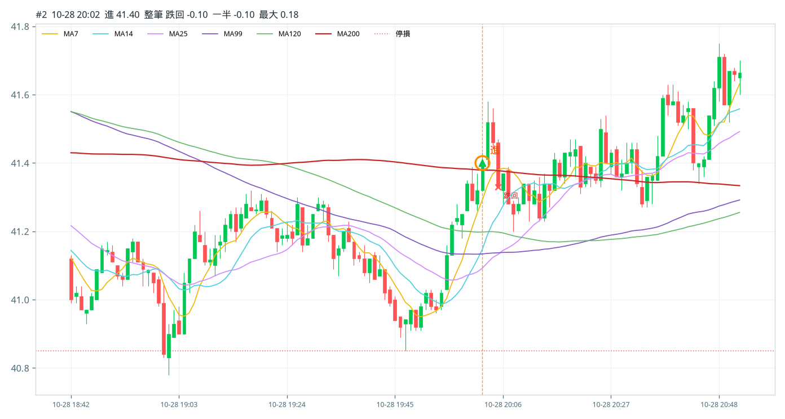
進場 41.34 停損 40.80 風險 0.54 整筆 -0.16 扣費 -0.19 4 分 一半 -0.16 扣費 -0.19 4 分 最大浮盈 0.13
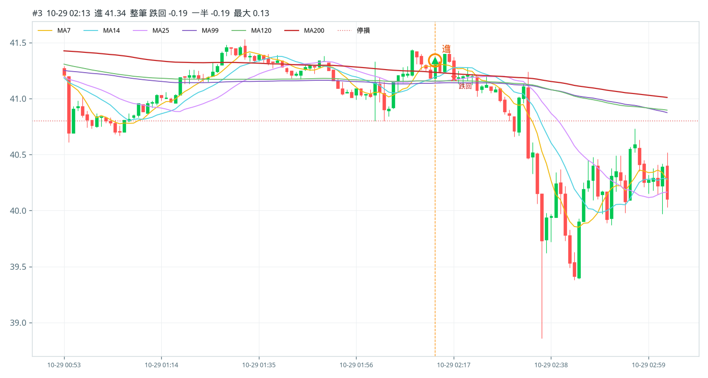
進場 42.50 停損 41.85 風險 0.65 整筆 -0.22 扣費 -0.25 6 分 一半 -0.22 扣費 -0.25 6 分 最大浮盈 0.50

進場 42.42 停損 41.48 風險 0.94 整筆 -0.17 扣費 -0.20 2 分 一半 -0.17 扣費 -0.20 2 分 最大浮盈 0.13

進場 51.71 停損 51.19 風險 0.52 整筆 -0.08 扣費 -0.12 2 分 一半 -0.08 扣費 -0.12 2 分 最大浮盈 0.04
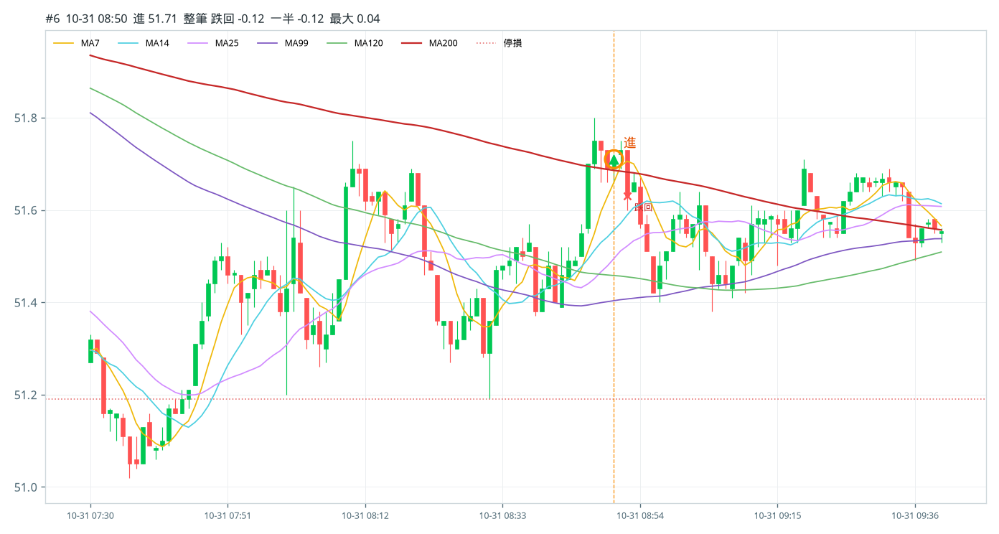
進場 50.95 停損 50.48 風險 0.47 整筆 +0.00 扣費 -0.04 1 分 一半 +0.00 扣費 -0.04 1 分 最大浮盈 0.01
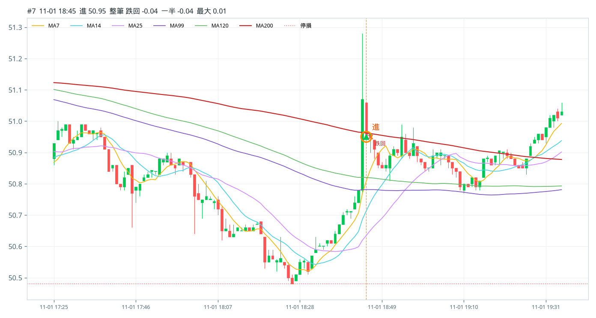
進場 51.46 停損 50.84 風險 0.62 整筆 -0.07 扣費 -0.11 2 分 一半 -0.07 扣費 -0.11 2 分 最大浮盈 0.03
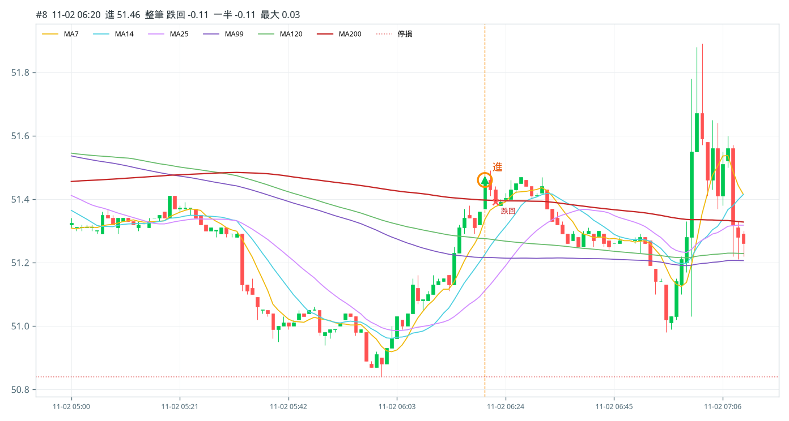
進場 49.00 停損 48.33 風險 0.67 整筆 -0.16 扣費 -0.20 2 分 一半 -0.16 扣費 -0.20 2 分 最大浮盈 0.00
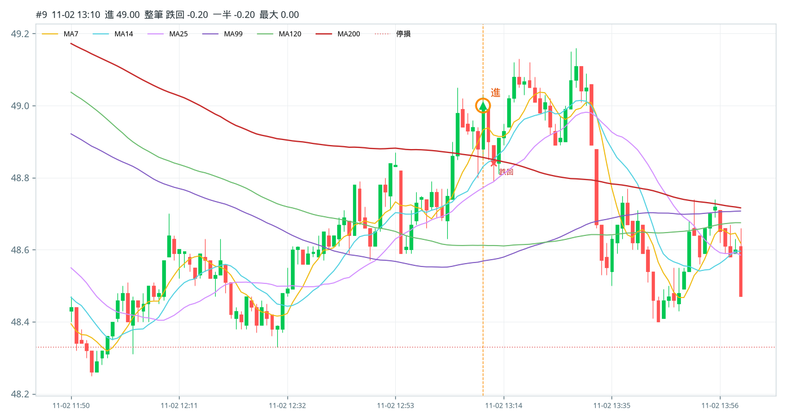
進場 56.93 停損 56.04 風險 0.89 整筆 -0.24 扣費 -0.29 4 分 一半 -0.24 扣費 -0.29 4 分 最大浮盈 0.12

進場 55.83 停損 55.07 風險 0.76 整筆 -0.10 扣費 -0.14 1 分 一半 -0.10 扣費 -0.14 1 分 最大浮盈 0.02

進場 51.12 停損 50.23 風險 0.89 整筆 +1.00 扣費 +0.96 27 分 一半 +2.20 扣費 +2.15 188 分 最大浮盈 7.00
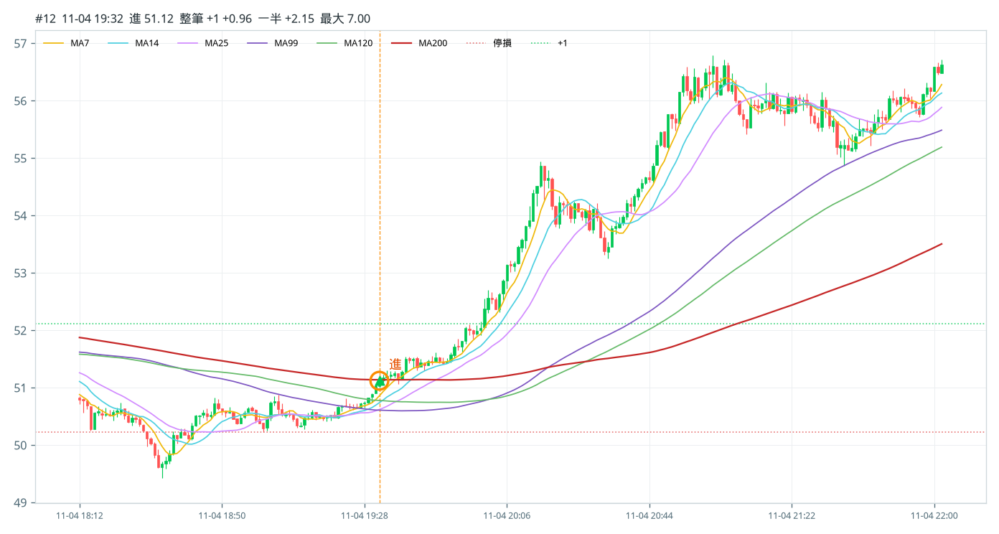
進場 63.00 停損 62.13 風險 0.87 整筆 -0.27 扣費 -0.32 29 分 一半 -0.27 扣費 -0.32 29 分 最大浮盈 0.59

進場 70.81 停損 70.24 風險 0.57 整筆 -0.02 扣費 -0.08 1 分 一半 -0.02 扣費 -0.08 1 分 最大浮盈 0.05

進場 70.80 停損 69.76 風險 1.04 整筆 -0.16 扣費 -0.22 1 分 一半 -0.16 扣費 -0.22 1 分 最大浮盈 0.00
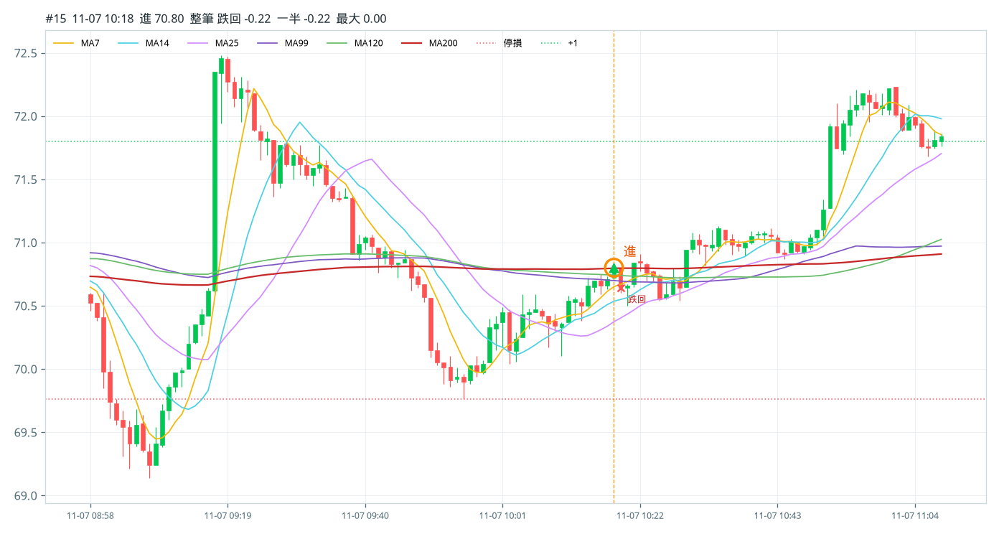
進場 70.54 停損 68.72 風險 1.82 整筆 +1.00 扣費 +0.94 21 分 一半 +2.08 扣費 +2.02 284 分 最大浮盈 5.16
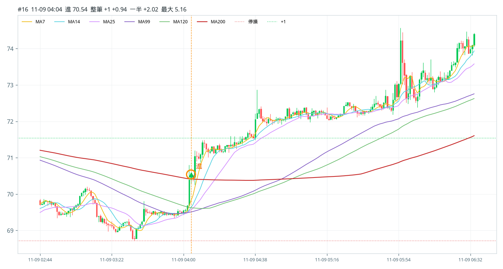
進場 46.84 停損 46.17 風險 0.67 整筆 -0.07 扣費 -0.11 1 分 一半 -0.07 扣費 -0.11 1 分 最大浮盈 0.01

進場 54.81 停損 53.86 風險 0.95 整筆 -0.13 扣費 -0.17 1 分 一半 -0.13 扣費 -0.17 1 分 最大浮盈 0.08

進場 53.83 停損 53.08 風險 0.75 整筆 -0.14 扣費 -0.18 2 分 一半 -0.14 扣費 -0.18 2 分 最大浮盈 0.00
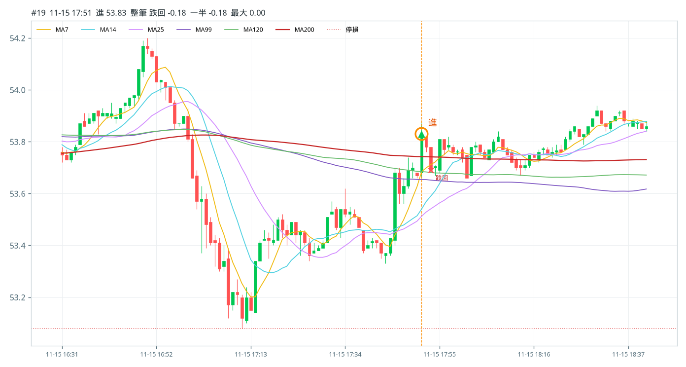
進場 55.69 停損 54.72 風險 0.97 整筆 -0.04 扣費 -0.08 119 分 一半 -0.04 扣費 -0.08 119 分 最大浮盈 0.99
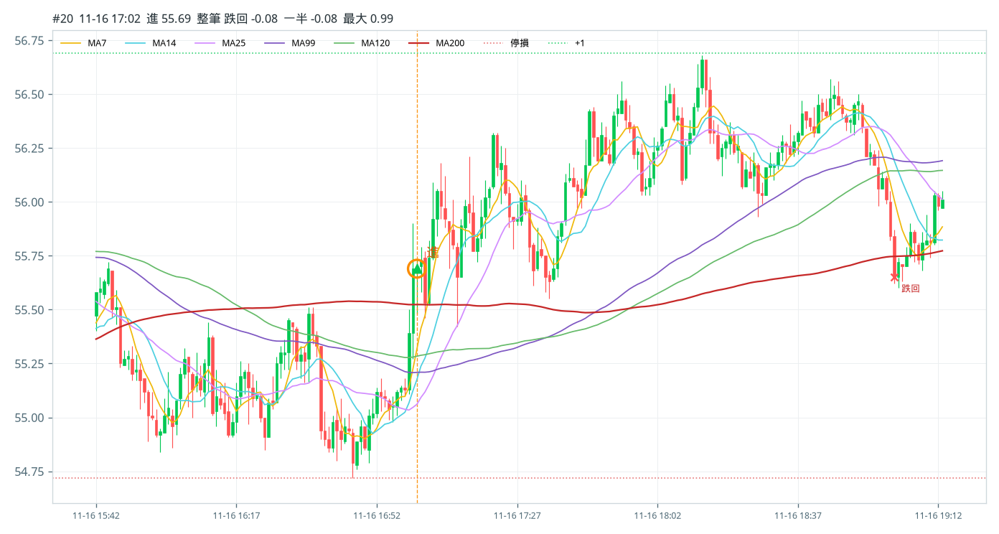
進場 57.61 停損 56.49 風險 1.12 整筆 -0.24 扣費 -0.29 22 分 一半 -0.24 扣費 -0.29 22 分 最大浮盈 0.41
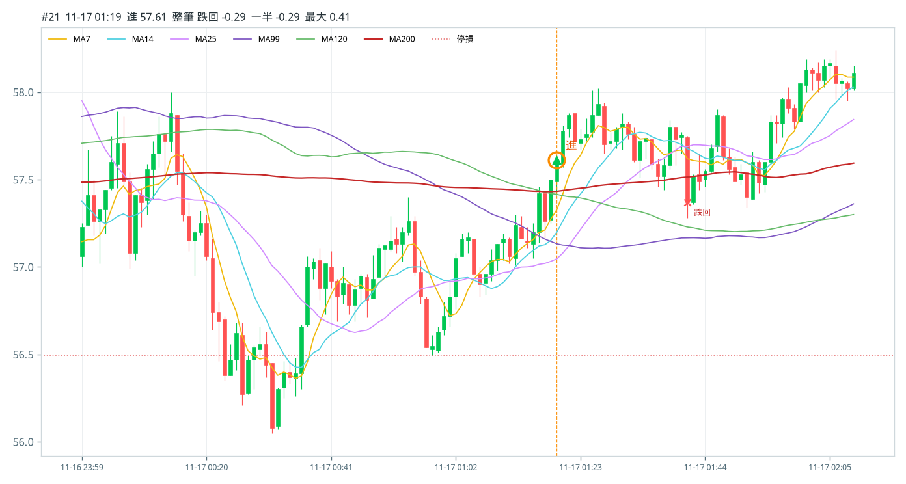
進場 56.29 停損 55.20 風險 1.09 整筆 -0.15 扣費 -0.20 1 分 一半 -0.15 扣費 -0.20 1 分 最大浮盈 0.04

進場 54.31 停損 53.59 風險 0.72 整筆 +1.00 扣費 +0.96 57 分 一半 +0.83 扣費 +0.79 157 分 最大浮盈 2.41

進場 67.30 停損 66.15 風險 1.15 整筆 +0.00 扣費 -0.05 1 分 一半 +0.00 扣費 -0.05 1 分 最大浮盈 0.16
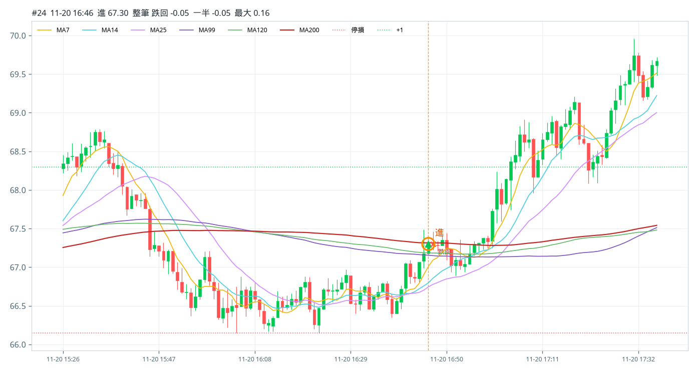
進場 76.54 停損 75.84 風險 0.70 整筆 -0.09 扣費 -0.15 7 分 一半 -0.09 扣費 -0.15 7 分 最大浮盈 0.15
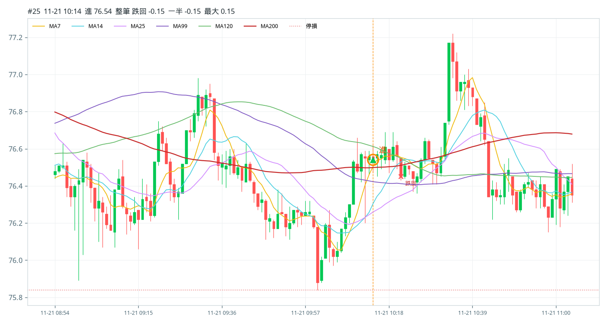